第 12 章 鲁棒性能
不过，如果有意把放大器增益做得比所需值高，例如高 40 分贝，在能量意义上相当于多出一万倍，再把输出以某种方式反馈到输入端，把这部分多余增益丢掉，就可以显著改善放大倍数的恒定性，并减少非线性。
本章关注反馈系统鲁棒性的分析。这是一个很大的主题，这里只介绍若干关键概念。我们考虑过程动态不确定时系统的稳定性和性能，并推导鲁棒稳定和鲁棒性能的基本限制。为此，我们发展描述不确定性的方法，包括参数变化形式的不确定性，以及被忽略动态形式的不确定性。最后，我们还会简要介绍一些用于实现鲁棒性能的控制器设计方法。
12.1 不确定性建模
本章开头布莱克的引文说明，反馈的关键用途之一，是让系统对不确定性具有鲁棒性，也就是他说的放大倍数恒定。这是反馈最有用的性质之一，也正是它使我们能够基于大幅简化的模型设计反馈系统。
动态系统中的一种不确定性是参数不确定性，也就是描述系统的参数未知。典型例子是汽车质量变化，它会随乘客数量和行李重量改变。对非线性系统线性化时，线性化模型的参数也取决于工作条件。研究参数不确定性的影响很直接，只需在一系列参数值上评价性能指标即可。这种计算会揭示参数变化带来的后果。下面用一个简单例子说明。
例 12.1 巡航控制
巡航控制问题在第 3.1 节中描述过，例 10.3 中设计了 PI 控制器。为了研究参数变化的影响，选择一个针对标称工作条件设计的控制器：质量 \(m=1600\)，四挡，\(\alpha=12\)，速度 \(v_e=25\) m/s。控制器增益为
图 12.1a 显示汽车遇到 \(3^\circ\) 上坡时的速度 \(v\) 和油门 \(u\)，其中质量在 \(1600<m<2000\) 范围内变化，挡位传动比为 3 到 5 挡，即 \(\alpha=10,12,16\)，速度约在 \(10\le v\le40\) m/s 范围内变化。
仿真使用围绕不同工作条件线性化得到的模型。图中显示响应存在变化，但变化相当合理。最大速度误差约在 0.2 到 0.6 m/s 之间，调节时间约为 15 s。某些情况下控制信号略大于 1，这意味着油门完全打开。如果想更详细研究这些情况，需要使用带抗饱和保护控制器的完整非线性仿真。图 12.1b 显示不同工作条件下闭环系统的特征值。可以看到，所有情况下闭环系统都有良好阻尼。
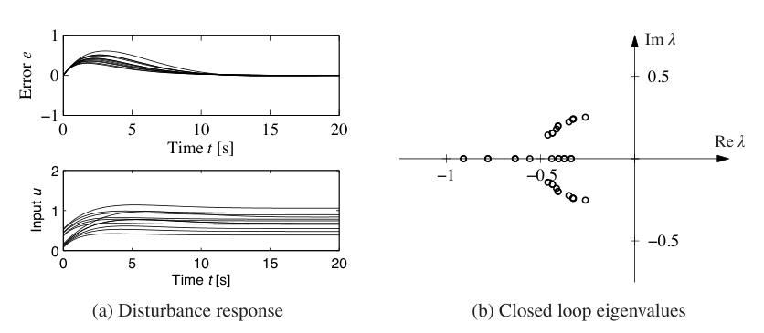
这个例子说明，至少就参数变化而言，基于简单标称模型的设计会给出令人满意的控制。它也说明，可以在所有情况下使用固定参数控制器。注意，这里没有考虑低挡低速工作条件，但巡航控制器通常也不会在这些情况下使用。
未建模动态
研究参数变化的影响通常比较容易。然而，还有其他重要不确定性，正如第 2.3 节末尾讨论的那样。巡航控制系统的简单模型只捕捉车辆前向运动动态，以及发动机和传动系统的转矩特性。例如，它没有包含发动机动态的详细模型，燃烧过程极其复杂；也没有包含现代电子控制发动机中可能出现的轻微延迟，这些延迟来自嵌入式计算机的处理时间。这些被忽略的机制称为未建模动态。
一种处理未建模动态的方法，是建立更复杂模型。这类模型常用于控制器开发，但建立它们需要大量工作。另一种方法，是研究闭环系统是否对某些通用形式的未建模动态敏感。基本思想是，在系统描述中加入一个传递函数来表示未建模动态，要求其频率响应有界，但除此之外不作具体规定。例如，在巡航控制例子中，可以把发动机动态建模为一个会快速提供油门所请求转矩的系统，它相对于简化模型产生小偏差；简化模型假设转矩响应是瞬时的。这种技术也常可用于参数变化建模，从而形成相当通用的不确定性处理方法。
特别地，我们希望研究额外线性动态是否会造成困难。一种简单做法是假设过程传递函数为
其中 \(P(s)\) 是标称简化传递函数，\(\Delta_a\) 用加性不确定性的形式表示未建模动态。图 12.2 显示了不确定性的不同表示方式。
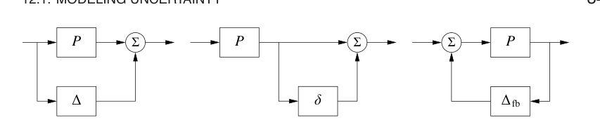
两个系统何时相似：Vinnicombe 度量
描述鲁棒性时，一个基本问题是判断两个系统何时接近。若能刻画这种接近性，就可以根据真实系统必须多接近模型才能仍然达到期望性能，来描述鲁棒性。这个看似无害的问题并没有表面上那么简单。一个朴素做法是说，如果两个系统的开环响应接近，那么它们就是接近的。虽然这很自然，但会遇到麻烦，如下面两个例子所示。
例 12.2 开环相似但闭环差异很大
传递函数为
的两个系统，当 \(T\) 很小时具有非常相似的开环响应。图 12.3a 上方以 \(T=0.025\)、\(k=100\) 为例显示了这一点，阶跃响应差异几乎看不出来。图 12.3a 下方显示单位增益误差反馈下的阶跃响应。注意，一个闭环系统稳定，另一个闭环系统不稳定。
例 12.3 开环不同但闭环相似
考虑系统
开环响应非常不同，因为 \(P_1\) 稳定而 \(P_2\) 不稳定，如图 12.3b 上方所示。对两个系统施加单位反馈后，闭环传递函数为
当 \(k\) 很大时，二者非常接近，如图 12.3b 所示。
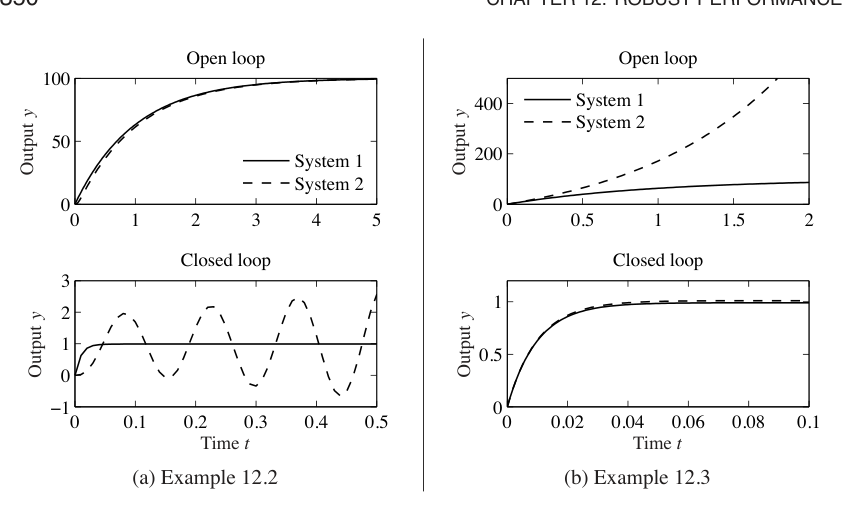
这些例子说明，如果目标是闭合反馈回路，比较系统开环响应可能非常误导。
受这些例子启发，引入 Vinnicombe 度量。这是一种适合闭环系统的距离度量。考虑两个传递函数为 \(P_1\) 和 \(P_2\) 的系统，定义
这是一个度量，并满足 \(0\le d(P_1,P_2)\le1\)。数值 \(d(P_1,P_2)\) 可解释为分别对 \(P_1\) 和 \(P_2\) 施加单位反馈后所得闭环系统互补灵敏度函数之间的差异，见习题 12.3。该度量还有很好的几何解释，如图 12.4 所示。图中把 \(P_1\) 和 \(P_2\) 的奈奎斯特图投影到一个直径为 1、位于复平面原点的球面上，这个球面称为黎曼球面。复平面中的点通过该点与北极连线投影到球面上。距离 \(d(P_1,P_2)\) 定义为所有频率上 \(P_1(i\omega)\) 和 \(P_2(i\omega)\) 投影之间最短弦距的最大值。当 \(P_1\) 和 \(P_2\) 都很小或都很大时，这个距离较小；它尤其强调增益交越频率附近的行为。
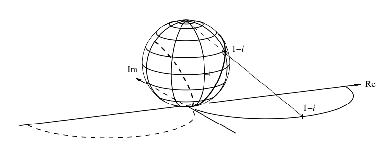
用这个距离比较反馈下系统行为时还有一个缺点。如果 \(P_2\) 从 \(P_1\) 连续扰动到 \(P_2\)，即使 \(d(P_1,P_2)\) 很小，中间可能存在某个传递函数 \(P\)，使 \(d(P_1,P)=1\)，见习题 12.4。为了研究何时会出现这种情况，注意到
若对某个 \(\omega\) 有
则右端为零，因此 \(d(P_1,P)=1\)。为了排除这种情况，考察 \(P\) 从 \(P_1\) 扰动到 \(P_2\) 时函数
的行为。如果函数
在右半平面内零点数不同，则存在中间 \(P\)，使某个 \(\omega\) 满足 \(1+P(i\omega)P_1(-i\omega)=0\)。为排除这种情形，引入集合 \(\mathcal C\)，它包含所有使 \(f_1\) 和 \(f_2\) 在右半平面零点数相同的系统对 \((P_1,P_2)\)。
Vinnicombe 度量，也称为 \(\nu\)-gap 度量，定义为
Vinnicombe [196] 证明了 \(\delta_\nu(P_1,P_2)\) 是一个度量，给出了基于该度量的强鲁棒性结果，并把理论发展到多输入多输出系统。下面通过计算前面例子中的度量来说明它的使用。
例 12.4 例 12.2 和例 12.3 的 Vinnicombe 度量
对例 12.2 中的系统，有
函数 \(f_1\) 在右半平面有一个零点。对 \(k=100\)、\(T=0.025\) 作数值计算，函数 \(f_2\) 的根为 \(46.3\)、\(-86.3\)、\(-30.0\pm60.0i\)。两个函数在右半平面都有一个零点，因此可以计算范数 (12.4)。当 \(T=0.025\) 时，得到 \(\delta_\nu(P_1,P_2)=0.98\)，这是相当大的值。为了获得合理鲁棒性，Vinnicombe 建议该值小于 \(1/3\)。
对例 12.3 中的系统，有
当 \(k>1\) 时，这些函数在右半平面有相同数量的零点。在这个特殊情形中，Vinnicombe 距离为
见习题 12.4。取 \(k=100\) 时，得到 \(\delta_\nu(P_1,P_2)=0.02\)。图 12.4 显示 \(k=2\) 时的奈奎斯特曲线及其投影。注意，当 \(k\) 很小时，\(d(P_1,P_2)\) 很小，尽管闭环系统非常不同。因此，必须考虑 \((P_1,P_2)\in\mathcal C\) 这个条件，见习题 12.4。
12.2 存在不确定性时的稳定性
讨论了如何描述不确定性以及两个系统的相似性以后，现在考虑鲁棒稳定性问题：什么时候可以证明系统稳定性对过程变化是鲁棒的？这是一个重要问题，因为可能出现不稳定正是反馈的主要缺点之一。因此，即使模型中存在小误差，也希望仍能保证稳定性和性能。
用奈奎斯特判据研究鲁棒稳定性
奈奎斯特判据为研究线性系统中不确定性的影响提供了有力而优雅的方法。一个简单判据是奈奎斯特曲线必须离临界点 \(-1\) 足够远。回忆奈奎斯特曲线到临界点的最短距离为 \(s_m=1/M_s\)，其中 \(M_s\) 是灵敏度函数最大值，\(s_m\) 是第 9.3 节引入的稳定裕度。最大灵敏度 \(M_s\) 或稳定裕度 \(s_m\) 因而是很好的鲁棒性指标，如图 12.5a 所示。
现在推导允许过程不确定性的显式条件。考虑由过程 \(P\) 和控制器 \(C\) 组成的稳定反馈系统。如果过程从 \(P\) 变为 \(P+\Delta_a\)，环路传递函数从 \(PC\) 变为 \(PC+C\Delta_a\)，如图 12.5b 所示。如果 \(\Delta_a\) 的大小有界，那么只要过程变化区域从不覆盖 \(-1\) 点，系统就保持稳定，因为这不会改变 \(-1\) 的环绕数。
这个分析成立还需要一些额外假设。最重要的是，要求过程扰动 \(\Delta_a\) 是稳定的，这样不会引入新的右半平面极点，否则奈奎斯特判据会需要额外环绕。
现在计算允许过程扰动的解析界。临界点 \(-1\) 到环路传递函数 \(L\) 的距离为 \(|1+L|\)。因此，只要
扰动后的奈奎斯特曲线就不会到达临界点 \(-1\)。这意味着
这个条件必须对奈奎斯特曲线上的所有点成立，也就是对所有频率逐点成立。鲁棒稳定条件可写为
注意，这个条件是保守的，因为从图 12.5 可以看到，临界扰动方向是指向临界点 \(-1\) 的方向。其他方向允许更大的扰动。
式 (12.6) 允许我们在并不知道过程扰动精确形式时讨论不确定性。也就是说，可以验证任何满足给定界限的不确定性 \(\Delta_a\) 下系统都稳定。从分析角度看，它给出了一个设计的鲁棒性度量。反过来，如果要求达到某种鲁棒性水平，就可以尝试选择控制器 \(C\)，使适当频带内 \(T\) 足够小。
式 (12.6) 是反馈系统在实践中表现良好的原因之一。用于设计控制系统的数学模型常常是简化的，过程性质也可能在运行中改变。式 (12.6) 意味着，只要过程动态变化在相当大的范围内，闭环系统至少仍能保持稳定。
由式 (12.6) 可知，在 \(T\) 很小的频率处，允许较大变化；在 \(T\) 很大的频率处，允许的变化较小。不会导致不稳定的允许过程变化保守估计为
其中 \(M_t\) 是互补灵敏度最大值：
\(M_t\) 的值受控制器设计影响。例如，习题 12.5 说明，如果 \(M_t=2\)，那么 50% 的纯增益变化或 \(30^\circ\) 的纯相位变化都不会使闭环系统不稳定。
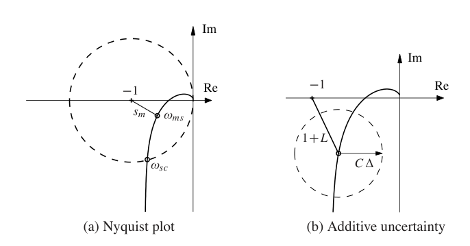
例 12.5 巡航控制
考虑第 3.1 节讨论的巡航控制系统。汽车在四挡、速度 25 m/s 时的模型为
控制器是 PI 控制器，增益为 \(k_p=0.72\)、\(k_i=0.18\)。图 12.6 用式 (12.6) 的界限画出允许过程不确定性的大小。低频处 \(T(0)=1\)，因此扰动可以与原过程一样大，即 \(|\delta|=|\Delta_a/P|<1\)。互补灵敏度在 \(\omega_{mt}=0.35\) 处取得最大值 \(M_t=1.14\)，因此这里给出最小允许过程不确定性，\(|\delta|<0.87\)，或 \(|\Delta_a|<3.47\)。最后，在高频处 \(T\to0\)，因此相对误差可以非常大。例如在 \(\omega=5\) 处有 \(|T(i\omega)|=0.195\)，这意味着稳定性要求为 \(|\delta|<5.1\)。分析清楚表明，该系统具有良好鲁棒性，传动系统高频性质对巡航控制器设计并不重要。
图 12.6 右图给出了系统鲁棒性的另一种说明，它显示过程传递函数的奈奎斯特曲线，以及若干频率处的不确定性界 \(|\Delta_a|=|P|/|T|\)。注意，控制器可以容忍很大不确定性，同时仍保持闭环稳定。
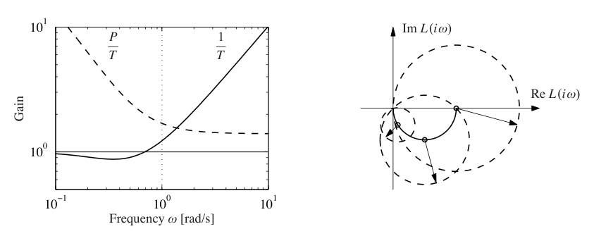
上例所示情况是许多过程的典型情形：只有在增益交越频率附近需要中等偏小的不确定性，高频和低频处可允许较大不确定性。因此，一个能很好描述交越频率附近过程动态的简单模型，常常足以用于设计。具有许多共振峰的系统是例外，因为这类系统的过程传递函数在较高频率处也可能有较大增益，例 9.9 就显示了这种情况。
式 (12.6) 给出的鲁棒性条件也可用小增益定理解释。为应用该定理，从带扰动过程的闭环系统框图出发，做一系列框图变换，把代表不确定性的模块隔离出来，如图 12.7 所示。结果是图 12.7c 中的双模块互连，其环路传递函数为
式 (12.6) 意味着最大环路增益小于 1，因此系统由小增益定理可知稳定。
小增益定理可以用于检查许多其他情形下的不确定性鲁棒稳定性。表 12.1 总结了几种常见情况；证明都可通过小增益定理完成，留作习题。
表 12.1：不同类型不确定性的鲁棒稳定条件。
| 过程 | 不确定性类型 | 鲁棒稳定条件 |
|---|---|---|
| \(P+\Delta_a\) | 加性 | \(\|CS\Delta_a\|_\infty<1\) |
| \(P(1+\delta)\) | 乘性 | \(\|T\delta\|_\infty<1\) |
| \(P/(1+\Delta_{fb}P)\) | 反馈 | \(\|PS\Delta_{fb}\|_\infty<1\) |
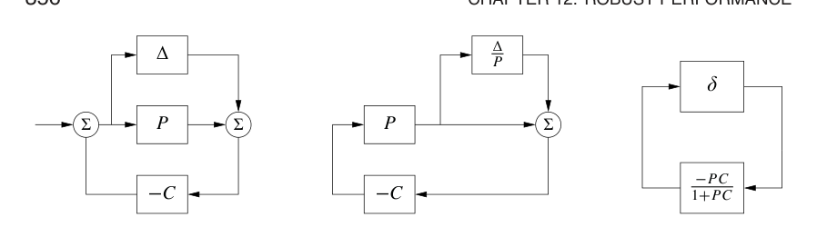
例 12.6 伯德理想环路传递函数
电子放大器设计中的一个主要问题，是得到一个对电子元件增益变化不敏感的闭环系统。伯德发现
是一种理想环路传递函数。伯德图的增益曲线是一条斜率为 \(-n\) 的直线，相位恒为
因此，对所有增益 \(k\)，相位裕度为
稳定裕度为
这个精确传递函数无法用物理元件实现，但可以在给定频率范围内用有理函数近似，见习题 12.7。例 8.3 中描述的运算放大器电路，其近似传递函数为 \(G(s)=k/(s+a)\)，可看作伯德理想传递函数中 \(n=1\) 的实现。运算放大器设计者会投入大量努力，使这种近似在尽可能宽的频率范围内有效。
尤拉参数化
稳定性是如此核心的性质，因此刻画给定过程的所有稳定化控制器很有用。这种表示称为尤拉参数化。它在解决设计问题时非常有用，因为它允许在所有稳定化控制器中搜索，而不必显式检验稳定性。
先为具有有理传递函数 \(P\) 的稳定过程推导尤拉参数化。如果使用稳定传递函数 \(Q\) 做前馈控制，并且
就可以得到互补灵敏度函数为 \(T\) 的系统。注意，由于 \(Q\) 稳定，\(T\) 必须具有与 \(P\) 相同的右半平面零点。现在假设希望用单位反馈和控制器 \(C\) 实现互补传递函数 \(T\)。由于
控制器传递函数为
直接计算得到
如果 \(P\) 和 \(Q\) 都稳定，这些传递函数都稳定，因此式 (12.8) 给出的控制器是稳定化控制器。事实上，可以证明所有稳定化控制器都可由式 (12.8) 的形式给出，只需适当选择 \(Q\)。图 12.8a 显示了这个参数化框图。
对不稳定系统也可以得到类似刻画。考虑具有有理传递函数
的过程，其中 \(a(s)\) 和 \(b(s)\) 是多项式。引入稳定多项式 \(c(s)\)，可以写成
其中 \(A(s)=a(s)/c(s)\)、\(B(s)=b(s)/c(s)\) 为稳定有理函数。类似地，引入控制器
其中 \(F_0(s)\)、\(G_0(s)\) 为稳定有理函数。有
当且仅当有理函数 \(AF_0+BG_0\) 在右半平面没有零点时，控制器 \(C_0\) 是稳定化控制器。令 \(Q\) 为稳定有理函数，并考虑控制器
过程 \(P\) 与控制器 \(C\) 对应的四函数组为
如果 \(AF_0+BG_0\) 在右半平面没有零点，则所有这些传递函数稳定，因此式 (12.9) 给出的控制器对任意稳定 \(Q\) 都是稳定化控制器。图 12.8b 给出了带控制器 \(C\) 的闭环系统框图。注意，传递函数 \(Q\) 在四函数组表达式中仿射出现，这对于寻找具有特定性质的 \(Q\) 很有用。
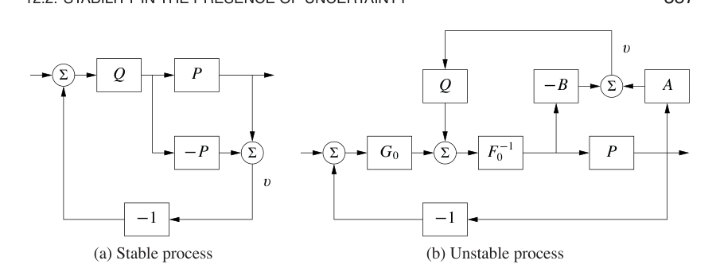
12.3 存在不确定性时的性能
到目前为止，我们研究了不稳定风险以及对过程不确定性的鲁棒性。现在研究过程变化怎样影响负载扰动、测量噪声和参考信号响应。为此，分析图 12.9 中的系统，它与第 11 章分析的基本反馈回路相同。
扰动衰减
如第 11.3 节所述，灵敏度函数 \(S\) 粗略刻画反馈对扰动的影响。更详细的刻画由从负载扰动到过程输出的传递函数给出：
负载扰动通常具有低频成分，因此该传递函数在低频处应当较小。对低频增益为常数的过程，以及具有积分作用的控制器，有 \(G_{yd}\approx s/k_i\)。因此，积分增益 \(k_i\) 是负载扰动衰减的一个简单指标。
为了弄清 \(G_{yd}\) 如何受过程传递函数小变化影响，对式 (12.10) 关于 \(P\) 求导，得到
因此
所以，在 \(|S(i\omega)|\) 很小的频率处，也就是负载扰动重要的频率处，对负载扰动的响应对过程变化不敏感。
反馈的一个缺点是控制器会把测量噪声送入系统。因此，除了负载扰动抑制之外，还必须确保测量噪声产生的控制动作不要太大。由图 12.9 可知，从测量噪声到控制器输出的传递函数为
由于测量噪声通常具有高频成分，传递函数 \(G_{un}\) 在高频处不应太大。环路传递函数 \(PC\) 在高频处通常很小，这意味着大 \(s\) 时 \(G_{un}\approx -C\)。为了避免注入过多测量噪声，必须让 \(C(s)\) 在大 \(s\) 时较小。这个性质称为高频滚降。第 10.5 节中 PID 控制器对测量信号滤波以减少测量噪声注入，就是一个例子。
为了确定 \(G_{un}\) 怎样受过程传递函数小变化影响，对式 (12.12) 求导：
整理可得
由于互补灵敏度函数在高频处也很小，在测量噪声重要的频率处，过程不确定性对传递函数 \(G_{un}\) 的影响很小。
参考信号跟踪
从参考到输出的传递函数为
其中包含互补灵敏度函数。为了看出 \(P\) 的变化如何影响系统性能，对式 (12.14) 关于过程传递函数求导：
因此
闭环传递函数的相对误差等于灵敏度函数与过程相对误差的乘积。特别地，由式 (12.15) 可知，当灵敏度很小时，闭环传递函数的相对误差也很小。这是反馈的有用性质之一。
与上一节一样，这里的分析成立也需要一些数学假设。首先，扰动 \(\Delta_a\) 必须较小，这由写成 \(dP\) 表示。其次，扰动必须稳定，以免引入新的右半平面极点，从而需要在奈奎斯特判据中引入额外环绕。和前面一样，这个条件是保守的：它允许任何满足给定界限的扰动，而实际扰动可能更受限制。
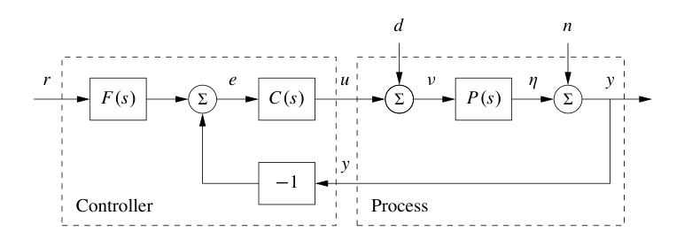
例 12.7 运算放大器电路
为了说明这些工具的使用，考虑图 12.10 所示基于运算放大器的放大器性能。我们希望分析在运算放大器动态响应存在不确定性，以及输出负载变化时放大器的性能。系统用图 12.10b 中的框图建模，该框图基于例 9.1 的推导。
先考虑运算放大器未知动态的影响。若把运放动态建模为
则整个电路的传递函数为
可以看到，如果 \(G(s)\) 在期望频率范围内很大，那么闭环系统非常接近理想响应 \(\alpha=R_2/R_1\)。假设
其中 \(b\) 是放大器增益带宽积，见例 8.3，则灵敏度函数和互补灵敏度函数为
标称值附近的灵敏度函数告诉我们跟踪响应如何随过程扰动变化：
可以看到，在低频处 \(S\) 很小，因此带宽 \(a\) 或增益带宽积 \(b\) 的变化对放大器性能影响相对较小，前提是 \(b\) 足够大。
为了建模未知负载影响，在系统输出端加入扰动，如图 12.10b 所示。这个扰动表示负载效应导致的输出电压变化。传递函数 \(G_{yd}=S\) 给出输出对负载扰动的响应，可以看到，如果 \(S\) 很小，就能抑制这类扰动。通过对 \(G_{yd}\) 关于 \(P\) 求导，可以计算 \(G_{yd}\) 对过程动态扰动的灵敏度：
从而
因此，在低频处，当 \(T\) 近似为 1 时，扰动抑制性能的相对变化大致等于过程扰动；在较高频率处这种影响下降。不过要记住，\(G_{yd}\) 本身在低频处很小，因此这种相对性能变化在许多应用中可能不是问题。
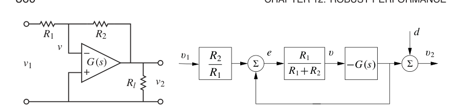
12.4 鲁棒极点配置
第 6 章和第 7 章已经看到，如何通过设定闭环系统特征值位置来设计控制器。如果从频域分析所得系统，闭环特征值对应闭环传递函数的极点，因此这些方法常称为极点配置设计。
状态空间设计方法与许多控制系统设计方法一样，并不显式考虑鲁棒性。因此必须始终检查鲁棒性，因为一些看似合理的设计可能给出鲁棒性很差的控制器。下面通过分析由状态反馈和观测器设计的控制器说明这一点。如果系统可观且可达，闭环极点可以配置到任意位置。然而，如果想得到鲁棒闭环系统，过程极点和零点会严重限制闭环极点位置。先给出一些例子，再基于这些例子的分析提出鲁棒极点配置设计规则。
慢稳定过程零点
先研究慢稳定零点的影响，从一个简单例子开始。
例 12.8 车辆转向
考虑例 8.6 中车辆转向的线性化模型，其传递函数为
例 6.4 中设计了基于状态反馈的控制器，例 7.4 中把状态反馈与观测器结合起来。图 7.8 中仿真的系统闭环极点由 \(\omega_c=0.3\)、\(\zeta_c=0.707\)、\(\omega_o=7\)、\(\zeta_o=9\) 指定。现在假设希望得到更快闭环系统，选择
使用例 7.3 中的状态表示，极点配置设计给出状态反馈增益
以及观测器增益
控制器传递函数为
图 12.11 显示环路传递函数的奈奎斯特图和 伯德图。奈奎斯特图表明鲁棒性很差，因为环路传递函数非常接近临界点 \(-1\)。相位裕度为 \(7^\circ\)，稳定裕度为 \(s_m=0.077\)。伯德图中也可看到这种差鲁棒性：增益曲线在很宽频率范围内徘徊在 1 附近，相位曲线在很宽频率范围内接近 \(-180^\circ\)。分析图 12.12 中实线显示的灵敏度函数可以获得更多理解。最大灵敏度为 \(M_s=13\)、\(M_t=12\)，说明系统鲁棒性很差。
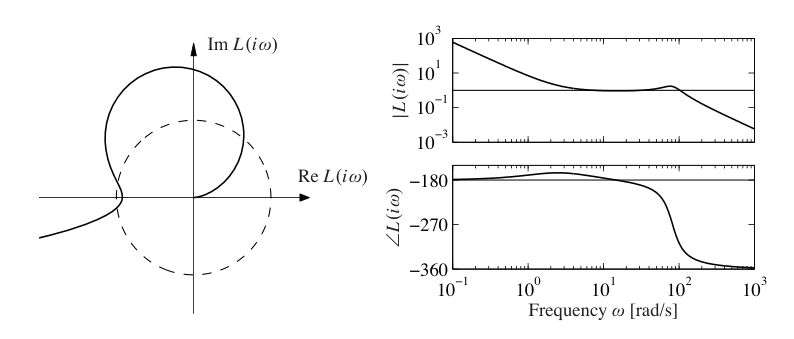
初看起来，一个标称闭环系统具有良好阻尼极点和零点的控制器竟然会对过程变化如此敏感，似乎有些意外。控制器在右半平面有一个 \(s=3.5\) 的零点，这提示系统有异常性质。为了理解发生了什么，研究灵敏度函数出现峰值的原因。
令过程和控制器的传递函数为
其中 \(n_p,n_c,d_p,d_c\) 是分子和分母多项式。互补灵敏度函数为
\(T(s)\) 的极点是闭环系统极点，零点由过程和控制器零点给出。草绘互补灵敏度函数增益曲线可以发现，低频时 \(T(s)=1\)，在第一个零点处，也就是过程零点 \(s=-2\) 处，\(|T(i\omega)|\) 开始增大；在控制器零点 \(s=3.4\) 处进一步增大；直到闭环极点出现在 \(\omega_c=10\) 和 \(\omega_o=20\) 时才开始下降。因此，互补灵敏度函数会出现峰值。峰值大小取决于传递函数零点和极点之间的比例。
可以通过把一个闭环极点放在慢过程零点附近，来避免互补灵敏度函数峰值。选择 \(\omega_c=10\)、\(\zeta_c=2.6\) 即可实现，这给出闭环极点 \(s=-2\) 和 \(s=-50\)。此时控制器传递函数为
图 12.12 中虚线显示了对应灵敏度函数。该控制器给出最大灵敏度 \(M_s=1.34\)、\(M_t=1.41\)，鲁棒性显著更好。注意，控制器有一个 \(s=-2\) 处的极点，用来抵消慢过程零点。这个设计也可以更简单地完成：先抵消慢稳定过程零点，再为简化系统设计控制器。
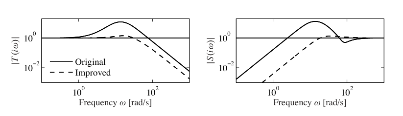
这个例子给出一个经验：必须选择与慢稳定过程零点相等或接近的闭环极点。另一个经验是，慢不稳定过程零点会限制可达到带宽，这一点第 11.5 节已经指出。
快稳定过程极点
下一个例子显示快稳定极点的影响。
例 12.9 快系统极点
考虑一阶系统的 PI 控制器，过程和控制器传递函数为
环路传递函数为
闭环特征多项式为
如果指定期望闭环极点为 \(-p_1\) 和 \(-p_2\)，可得控制器参数
灵敏度函数为
假设过程极点 \(a\) 远大于闭环极点 \(p_1,p_2\)，例如 \(p_1<p_2\ll a\)。注意，如果 \(a>p_1+p_2\)，比例增益为负，控制器在右半平面有一个零点，这提示系统性质很差。
再看灵敏度函数，它在高频处为 1。从高频向低频移动时，灵敏度在过程极点 \(s=a\) 处增大。直到到达闭环极点时，灵敏度才下降，因此会产生一个大致为 \(a/p_2\) 的大峰值。图 12.13 显示 \(a=b=1\)、\(p_1=0.05\)、\(p_2=0.2\) 时灵敏度函数幅值。注意其中的高灵敏度峰值。为比较，图中还显示闭环极点快于过程极点时的增益曲线，例如 \(p_1=5,p_2=20\)、\(a=1\)。
通过选择一个闭环极点等于过程极点，即 \(p_2=a\)，可以避免差鲁棒性问题。此时控制器增益为
环路传递函数和灵敏度函数为
现在所有频率处的最大灵敏度都小于 1。注意，这之所以可能，是因为过程传递函数在 \(s^{-1}\) 意义下趋于零。
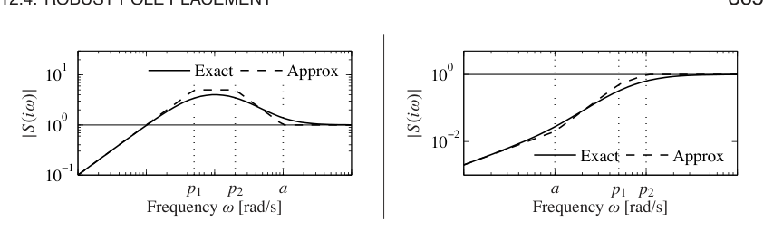
极点配置设计规则
根据上述例子得到的洞察，现在可以给出能获得良好鲁棒性的设计规则。考虑最大互补灵敏度表达式
令 \(\omega_{gc}\) 为期望增益交越频率。假设过程有比 \(\omega_{gc}\) 慢的零点。互补灵敏度函数在低频处为 1，并且在接近过程零点的频率处会增大，除非附近有闭环极点。为了避免互补灵敏度函数出现大值，闭环系统应具有接近或等于慢稳定零点的极点。这意味着慢稳定零点应由控制器极点抵消。由于不稳定零点不能抵消，慢不稳定零点的存在意味着可达到增益交越频率必须小于最慢不稳定过程零点。
现在考虑比期望增益交越频率快的过程极点。最大灵敏度为
灵敏度函数在高频处为 1。从高频向低频移动时，灵敏度函数在快过程极点处增大。除非闭环极点接近这些快过程极点，否则会出现大峰值。为了避免灵敏度大峰值，闭环系统应具有匹配快过程极点的极点。这意味着控制器应通过零点抵消快过程极点。由于不稳定模态不能抵消，快不稳定极点的存在意味着增益交越频率必须足够大。
总结起来，选择闭环极点有一条简单规则：慢稳定过程零点应由慢闭环极点匹配，快稳定过程极点应由快闭环极点匹配。慢不稳定过程零点和快不稳定过程极点会造成严重限制。
例 12.10 原子力显微镜纳米定位系统
例 9.9 中研究了一个简单纳米定位器，并说明该系统可以用积分控制器控制。由于增益交越频率受限于
闭环性能较差。可以证明，使用 PI 控制器也只能得到很少改进。为了改善性能，采用 PID 控制。作为适度性能提升，将使用例 12.9 中得到的设计规则：快稳定过程极点应由控制器零点抵消。
因此，控制器传递函数应选择为
从而
图 12.14 显示 \(k_i=0.5\) 时系统四函数组的增益曲线。与图 9.12 比较可知，带宽从 \(\omega_{gc}=0.01\) 显著增加到 \(\omega_{gc}=k_i=0.5\)。然而，由于过程极点被抵消，系统仍会对接近共振频率的负载扰动非常敏感。\(CS\) 的增益曲线在共振频率处有一个凹陷或陷波，这意味着控制器在共振附近的增益很低。增益曲线还显示系统对高频噪声非常敏感。由于高频增益趋于无穷大，系统很可能无法使用。
通过把控制器修改为
可以缓解高频噪声敏感性，使其具有高频滚降。滤波常数 \(T_f\) 的选择，是高频测量噪声衰减和鲁棒性之间的折中。较大的 \(T_f\) 会显著减小传感器噪声影响，但也会降低稳定裕度。由于无滤波时增益交越频率为 \(k_i\)，合理选择是让滤波频率高于交越频率若干倍。图 12.14 中实线显示带滤波设计。图中 \(|CS(i\omega)|\) 和 \(|S(i\omega)|\) 显示，高频测量噪声敏感性以灵敏度略微增加为代价大幅降低。注意，由于极点和零点精确抵消，接近共振频率的差扰动衰减在灵敏度函数中不可见。
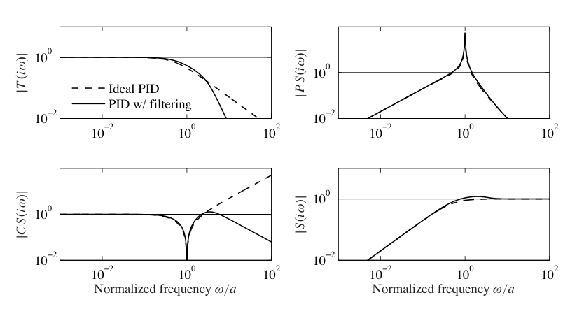
目前的设计缺点是接近共振频率的负载扰动没有被衰减。现在考虑一种主动衰减低阻尼模态的设计。先从理想 PID 控制器开始，这样设计可解析完成，然后加入高频滚降。该控制器得到的环路传递函数为
闭环系统为三阶，其特征多项式为
一般三阶多项式可参数化为
参数 \(\alpha_0\) 和 \(\zeta\) 给出极点相对构型，参数 \(\omega_0\) 给出极点大小，因此也给出系统带宽。把式 (12.19) 与式 (12.20) 中相同幂次的系数对应起来，得到关于控制器参数的线性方程，其解为
为了得到主动阻尼设计，闭环带宽必须至少与振荡模态一样快。加入高频滚降后，控制器为
取
是滤波时间常数的一个合适值。图 12.15 显示在 \(\zeta=0.707\)、\(\alpha_0=1\)、\(\omega_0=a,2a,4a\) 下设计所得四函数组增益曲线。图中显示灵敏度函数和互补灵敏度函数最大值较小。\(PS\) 的增益曲线说明负载扰动现在在整个频率范围内都得到良好衰减，并且衰减随 \(\omega_0\) 增大而增强。\(CS\) 的增益曲线说明，为提供主动阻尼需要很大的控制信号。\(CS\) 在高频处增益很高，也说明需要低噪声传感器和宽量程执行器。对 \(\omega_0=a,2a,4a\)，\(CS\) 的最大增益分别为 19、103 和 434。扰动衰减和控制器增益之间显然存在折中。比较图 12.14 和图 12.15，可以看到抵消快过程极点与主动阻尼两种设计在控制动作和扰动衰减之间的取舍。
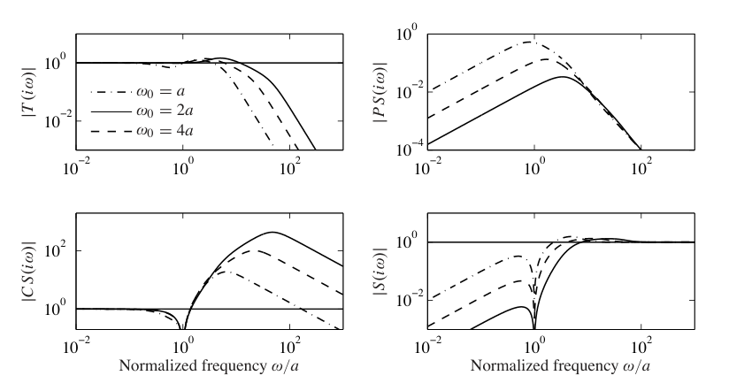
12.5 鲁棒性能设计
控制设计是一个内容丰富的问题，需要考虑许多因素。典型要求包括：负载扰动应被衰减；控制器只应注入适度测量噪声；输出应良好跟随命令信号变化；闭环系统应对过程变化不敏感。对图 12.9 中的系统，这些要求可通过灵敏度函数 \(S\)、\(T\) 以及传递函数 \(G_{yd},G_{un},G_{yr},G_{ur}\) 的指标来表达。注意，至少需要考虑六个传递函数，正如第 11.1 节所讨论的那样。这些要求彼此冲突，必须折中。增加带宽会改善负载扰动衰减，但也会增加噪声注入。
拥有能够保证鲁棒性能的设计方法非常理想。这类方法直到 20 世纪 80 年代末才出现。许多这类设计方法得到的控制器，与基于状态反馈和观测器的控制器具有相同结构。本节简要回顾其中一些技术，为希望深入专门学习的读者提供预览。
定量反馈理论
定量反馈理论，QFT，是 I. M. Horowitz [104] 发展的一种鲁棒环路整形图形设计方法。其思想是先确定一个控制器，使互补灵敏度对过程变化鲁棒，然后通过前馈塑造参考信号响应。图 12.16a 说明了这一思想，它在奈奎斯特图上显示互补灵敏度函数 \(T\) 的等值曲线。互补灵敏度函数在直线 \(\operatorname{Re}L(i\omega)=-0.5\) 上具有单位增益。在这条线附近，过程动态的显著变化只会造成互补传递函数的适度变化。图中的虚线部分对应区域 \(0.9<|T(i\omega)|<1.1\)。使用这种设计方法时，对每个频率用一个区域表示不确定性，并试图塑造环路传递函数，使 \(T\) 的变化尽可能小。设计常在图 12.16b 所示 尼科尔斯图上完成。
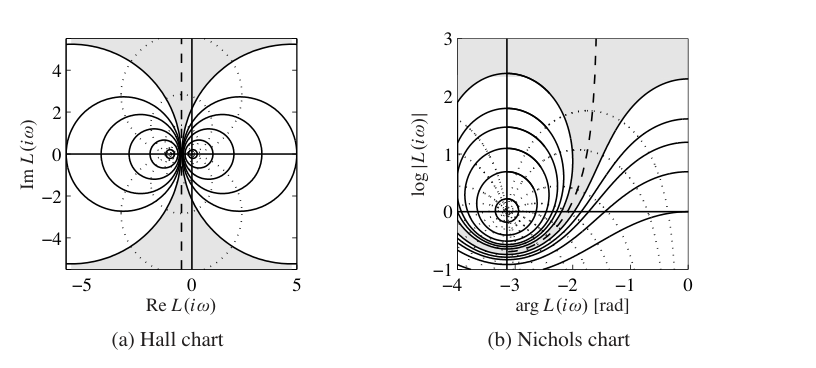
线性二次控制
在负载扰动衰减和测量噪声注入之间折中的一种方式，是设计一个使损失函数最小的控制器：
其中 \(\rho\) 是权重参数，见第 6.3 节讨论。这个损失函数在控制动作和输出偏差之间取得折中，因此也在负载扰动衰减与扰动注入之间折中。如果所有状态变量都可测，则控制器是状态反馈
形式与第 6.2 节中通过特征值配置得到的控制器相同。不过控制器增益是通过求解优化问题获得的。可以证明，这种控制器非常鲁棒，具有至少 \(60^\circ\) 的相位裕度和无穷增益裕度。由于过程模型是线性的，指标是二次的，这种控制器称为线性二次控制，即 LQ 控制。
当并非所有状态变量都可测时，可用观测器重构状态，见第 7.3 节。也可以在模型中显式引入过程扰动和测量噪声，并使用 卡尔曼滤波器重构状态，第 7.4 节对此作了简要讨论。卡尔曼滤波器与第 7.3 节中通过特征值配置设计的观测器具有相同结构，但观测器增益 \(L\) 现在通过求解优化问题获得。把线性二次控制与 卡尔曼滤波器结合得到的控制律称为线性二次高斯控制，即 LQG 控制。当负载扰动和测量噪声模型为高斯时，卡尔曼滤波器是最优的。
有趣的是，优化问题的解会给出具有状态反馈和观测器结构的控制器。状态反馈增益取决于参数 \(\rho\)，滤波器增益取决于模型中刻画过程噪声和测量噪声的参数，见第 7.4 节。有高效程序可以计算这些反馈和观测器增益。
遗憾的是，加入观测器后，状态反馈的良好鲁棒性会丧失。可以选择一些参数，使闭环系统鲁棒性很差，类似例 12.8。因此可以得出结论：测量所有状态与用观测器重构状态之间存在根本差异。
\(H_\infty\) 控制
鲁棒控制设计常称为 \(H_\infty\) 控制，原因稍后说明。基本思想简单，但细节复杂，因此这里仅给出结果的味道。关键思想见图 12.17，其中闭环系统用两个模块表示：过程 \(P\) 和控制器 \(C\)，这与第 11.1 节的讨论一致。过程 \(P\) 有两个输入：控制信号 \(u\)，它可由控制器操纵；广义扰动 \(w\)，它代表所有外部影响，例如命令信号和扰动。过程有两个输出：广义误差 \(z\)，它是误差信号向量，表示各信号偏离期望值的程度；测量信号 \(y\)，控制器可用它计算 \(u\)。对线性系统和线性控制器，闭环系统可表示为线性系统
它说明广义误差 \(z\) 如何依赖广义扰动 \(w\)。控制设计问题是寻找控制器 \(C\)，使即使过程存在不确定性，传递函数 \(H\) 的增益也很小。有许多不同方式可以指定不确定性和增益，从而产生不同设计。名称 \(H_2\) 和 \(H_\infty\) 控制分别对应范数 \(\|H\|_2\) 和 \(\|H\|_\infty\)。
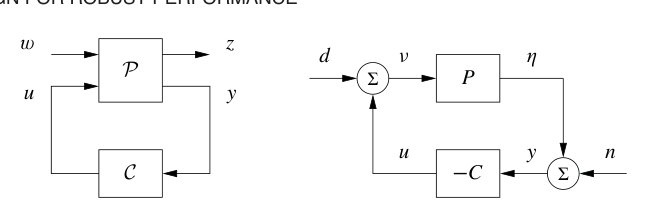
为了说明这些思想，考虑一个调节问题，假设参考信号为零，外部信号为负载扰动 \(d\) 和测量噪声 \(n\)，如图 12.17b 所示。广义输入为 \(w=(-n,d)\)。负号不是本质的，只是为了得到更整洁的方程。广义误差选择为 \(z=(\eta,\nu)\)，其中 \(\eta\) 是过程输出，\(\nu\) 是负载扰动中未被控制器补偿的部分。闭环系统因此建模为
直接计算可得
如果存在控制器使 \(\|H(P,C)\|_\infty<\gamma\)，可以用数值方法寻找这样的控制器。然后通过对 \(\gamma\) 迭代找到最佳控制器。这些计算可通过求解代数 Riccati 方程完成，例如使用 MATLAB 中的 hinfsyn 命令。控制器阶数与过程相同，并且具有与基于状态反馈和观测器的控制器相同结构，见图 7.7 和定理 7.3。
注意，如果最小化 \(\|H(P,C)\|_\infty\)，就能确保表示负载扰动传到输出的传递函数
以及表示测量噪声传到控制信号的传递函数
都较小。由于灵敏度函数和互补灵敏度函数也是 \(H(P,C)\) 的元素，因此也保证灵敏度小于 \(\gamma\)。这种设计方法因而在性能和鲁棒性之间作平衡。
\(H_\infty\) 控制器还带有强鲁棒性结果。由式 (12.4) 和式 (12.25) 可得
因此，\(\|H(P,C)\|_\infty\) 的倒数等于 \(P\) 与 \(-1/C\) 之间的 Vinnicombe 距离，可解释为广义稳定裕度。把它与 \(s_m\) 比较，后者定义为环路传递函数奈奎斯特曲线到临界点 \(-1\) 的最短距离。还可得出，如果找到控制器 \(C\) 使 \(\|H(P,C)\|_\infty<\gamma\)，那么该控制器会稳定任何满足
的过程 \(\tilde P\)。
扰动加权
最小化增益 \(\|H(P,C)\|_\infty\) 意味着所有单独信号从扰动到输出的传输增益，在所有输入频率上都小于 \(\gamma\)。假设所有扰动同等重要且所有频率同等重要，并不太现实。回忆负载扰动通常具有低频成分，而测量噪声通常由高频成分主导。通过在负载扰动上引入加权滤波器，如图 12.18 所示，可以很直接地修改问题，使不同频率的扰动得到不同强调。例如，选择 \(W\) 为低通滤波器，可以强化低频负载扰动，因为实际负载扰动为 \(W\bar d\)。
通过图 12.18 所示框图变换，可知带频率加权的系统等价于无频率加权的标准问题，并且信号关系为
其中
因此，寻找使 \(H(\bar P,\bar C)\) 增益最小的控制器 \(\bar C\)，等价于无扰动加权的问题。得到 \(\bar C\) 后，原系统控制器为
注意，如果引入频率权重 \(W=k/s\)，控制器会自动具有积分作用。
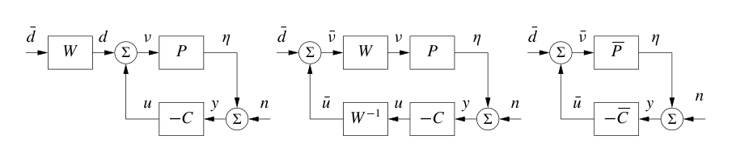
鲁棒设计的限制
鲁棒设计能达到的效果是有限的。尽管反馈具有良好性质，有些情况下过程变化太大，无法找到既鲁棒又具有良好性能的线性控制器。此时必须使用其他类型控制器。在某些情况下，可以测量与过程变化高度相关的变量。于是可以为不同参数值设计控制器，并根据测量信号选择相应控制器。这类控制设计称为增益调度。巡航控制器是一个典型例子，可用的测量信号包括挡位和速度。高性能飞机常用增益调度，调度变量包括马赫数和动压。使用增益调度时，必须确保控制器之间切换不会产生不希望的暂态，这通常称为无扰切换。
如果无法测量与参数有关的变量，可以使用自动调节和自适应控制。在自动调节中，通过扰动系统测量过程动态，然后自动设计控制器。自动调节要求参数保持不变，并且已经广泛用于 PID 控制。可以合理猜测，未来许多控制器都会具备自动调节功能。如果参数会变化，则可以使用自适应方法，在线测量过程动态。
12.6 延伸阅读
鲁棒控制是一个庞大主题，有大量文章和教材专门讨论。鲁棒性是经典控制中的核心问题，伯德的经典著作 [40] 已对此作了描述。后来，基于优化的设计方法发展带来的热潮中，鲁棒性一度被弱化。Anderson 和 Moore [7] 证明了基于状态反馈控制器的强鲁棒性，这也助长了这种乐观态度。Rosenbrock [169]、Horowitz [103] 和 Doyle [63] 指出了输出反馈的差鲁棒性，促使人们重新关注鲁棒性。一个重要进展是显式考虑鲁棒性的设计方法发展起来，例如 Zames [208] 的奠基性工作。鲁棒控制最初利用复变函数理论中的强大结果发展，所得控制器阶数较高。Doyle、Glover、Khargonekar 和 Francis [65] 取得了重大突破，他们证明该问题的解可以用 Riccati 方程得到，并且可以找到低阶控制器。该论文引出了对 \(H_\infty\) 控制的广泛研究，包括 Francis [78]，McFarlane 和 Glover [150]，Doyle、Francis 和 Tannenbaum [64]，Green 和 Limebeer [90]，Zhou、Doyle 和 Glover [209]，Skogestad 和 Postlethwaite [181] 以及 Vinnicombe [196] 的著作。该理论的一个主要优点是，把伺服机构理论中的许多直觉，与基于数值线性代数和优化的可靠数值算法结合起来。相关结果还扩展到了非线性系统，把设计问题看作一个扰动由对手生成的博弈，见 Basar 和 Bernhard [24] 的著作。增益调度和自适应控制见 Åström 和 Wittenmark [19]。
习题
12.1 考虑传递函数
的系统。证明当 \(a>0\) 时，可以用有界加性不确定性和乘性不确定性把 \(P_1\) 连续改变为 \(P_2\)；当 \(a<0\) 时则不行。还要证明，对于反馈不确定性，不需要对 \(a\) 作限制。
12.2 考虑传递函数
的系统。证明当 \(a>0\) 时，可以用有界反馈不确定性把 \(P_1\) 连续改变为 \(P_2\)；当 \(a<0\) 时则不行。还要证明，对于加性和乘性不确定性，不需要对 \(a\) 作限制。
12.3 灵敏度函数差异。令 \(T(P,C)\) 为过程 \(P\)、控制器 \(C\) 对应系统的互补灵敏度函数。证明
并为灵敏度函数推导类似公式。
12.4 黎曼球面。考虑传递函数为
的系统。证明
使用黎曼球面从几何上说明，当 \(k<1\) 时 \(\delta_\nu(P_1,P_2)=1\)。提示：只需在 \(\omega=0\) 处评价传递函数。
12.5 稳定裕度。考虑一个由传递函数为 \(P\) 的过程和传递函数为 \(C\) 的控制器组成的反馈回路。假设最大灵敏度为 \(M_s=2\)。证明相位裕度至少为 \(30^\circ\)，并且当增益改变 50% 时闭环系统仍稳定。
12.6 伯德理想环路传递函数。画出伯德理想环路传递函数的伯德图和奈奎斯特图。证明相位裕度为
稳定裕度为
12.7 考虑过程传递函数
其中增益可在 0.1 到 10 之间变化。对这些增益变化鲁棒的控制器，可通过寻找一个使环路传递函数近似为伯德理想形式 \(L(s)=1/s^n\) 的控制器得到。说明如何用有理函数近似来实现这个传递函数。
12.8 Smith 预估器。Smith 预估器是用于时滞系统的控制器，它是图 12.8a 的一个特殊版本，其中
控制器 \(C_0(s)\) 被设计为对过程 \(P_0(s)\) 给出良好性能。证明灵敏度函数为
12.9 理想时滞补偿器。考虑动态为纯时滞的过程，传递函数为
理想时滞补偿器是传递函数为
的控制器。证明灵敏度函数为
并说明时滞的任意小变化都会使闭环系统不稳定。
12.10 车辆转向。考虑图 12.11 中的奈奎斯特曲线。解释为什么曲线的一部分近似为圆。推导圆心和半径公式，并与实际奈奎斯特曲线比较。
12.11 考虑过程传递函数
讨论当设计要求主导极点的无阻尼固有频率分别为 1 和 10 时，闭环极点的合适选择。
12.12 AFM 纳米定位系统。考虑例 12.10 中的设计，并研究改变参数 \(\alpha_0\) 和 \(\zeta_0\) 的影响。
12.13 \(H_\infty\) 控制。考虑式 (12.24) 中的矩阵 \(H(P,C)\)。证明其奇异值为
还要证明
这意味着 \(1/\bar\sigma\) 是奈奎斯特图到临界点最近距离的一种推广。
12.14 证明
12.15 考虑系统
设计状态反馈，使
并设计观测器，使
然后用分离原理把二者组合成输出反馈。取数值
当过程增益增加 2% 时，计算扰动系统的特征值。还要计算环路传递函数和灵敏度函数。是否有办法预先知道该系统会高度敏感？
12.16 使用奈奎斯特判据研究鲁棒性。鲁棒性能也可以从奈奎斯特判据角度理解。令 \(S_{\max}(i\omega)\) 表示期望的灵敏度函数上界。证明如果存在加性不确定性 \(\Delta_a\) 时满足
则系统达到该性能水平。说明如何使用奈奎斯特图检查这个条件。